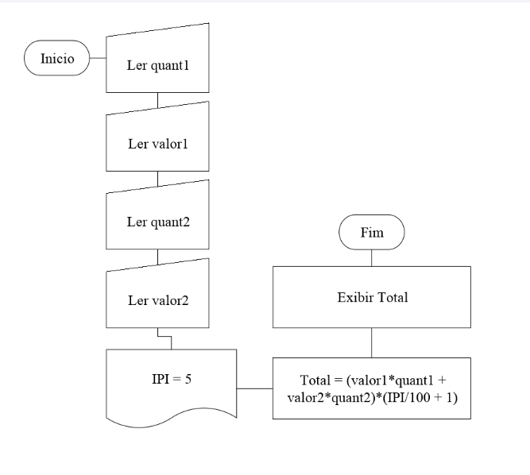
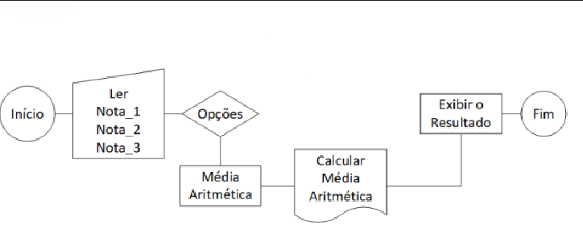

O que é fluxogramas ?
Um fluxograma é uma representação visual de um processo, mostrando as etapas sequenciais através de símbolos gráficos conectados por setas. É comumente utilizado para ilustrar a lógica de um algoritmo, descrever um procedimento ou modelar um fluxo de trabalho em diversos contextos, como programação, engenharia, negócios e processos industriais. O objetivo principal é fornecer uma visão clara e compreensível do fluxo de informações ou atividades em um sistema específico.
- Algoritimos -
Um algoritmo é uma série de regras descritas e ordenadas que descrevem um procedimento ou uma série de operações destinadas a resolver um problema ou objetivo específico. Algoritmos são os componentes lógicos fundamentais de soluções computacionais e são empregados em diversas disciplinas, incluindo programação , matemática, ciência da computação e etc. Eles representam um equação lógica de etapas que, se seguidas corretamente, levariam à resolução do problema.
- imagem de fluxograma -

- Fluxograma -

- Programa -